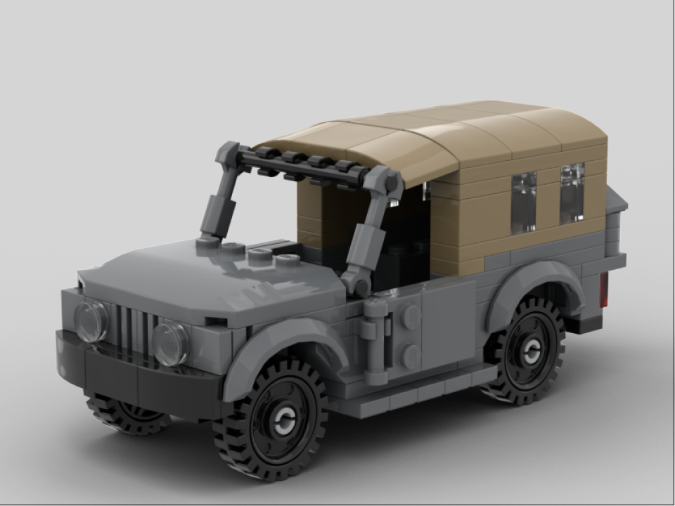
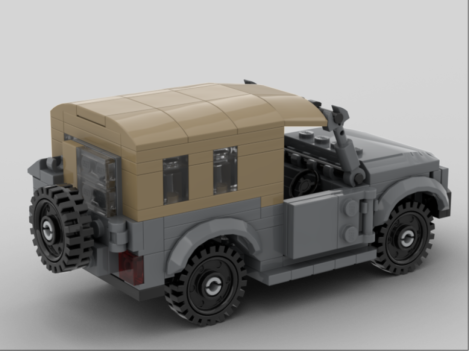

The Type 73 Light Truck is a ½ ton truck manufactured since 1973. There have been two different generations of the vehicle: Kyū and Shin (old and new). The Kyū was originally based off the Willys Jeep. The version that we chose to go with is the Shin version, which has served with the Japanese Self-Defense Force as a utility vehicle, and although most have been phased out of frontline service, many still serve as transport and reserve vehicles.
This model features two opening side doors, a rear opening door, a brick-built canvas cover roof, a gas can attached to the back, a spare wheel attached to the back door, and four rolling wheels (wow!).
